Research
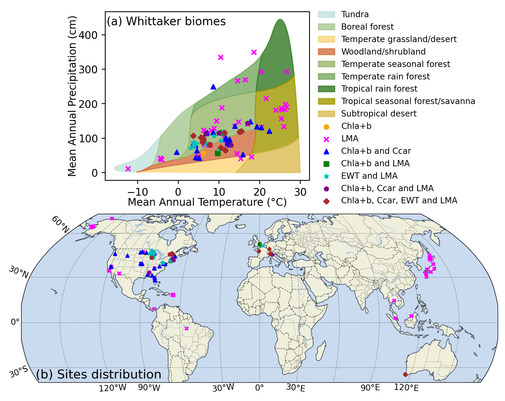
Tracking seasonal variability in plant traits from spaceborne PRISMA and NEON AOP across forest types and ecoregions
Plant traits serve as critical indicators of how plants adapt to environmental changes and influence ecosystem functions. While airborne hyperspectral remote sensing effectively maps plant traits through detailed reflectance properties, it is limited by cost and scale, making large-scale and temporal studies challenging. The recently launched spaceborne hyperspectral imager PRISMA offers frequent, large-scale and high-fidelity observations at 30 m spatial resolution with a revisit time of ~29 days — making it suitable for large-scale seasonal trait mapping.
This study developed a multi-stage framework by leveraging PRISMA spaceborne hyperspectral data and NEON Airborne Observation Platform (AOP) hyperspectral data to investigate the seasonal dynamics of four key plant traits — chlorophyll content (Chla+b), carotenoid content (Ccar), equivalent water thickness (EWT), and nitrogen content — across 11 NEON sites representing diverse forest types and ecoregions in the contiguous U.S.
- Research Questions:
- What are the capabilities of PRISMA data in quantifying seasonal variations of plant traits at large scales?
- How do plant traits vary within the growing season for different forest types and ecoregions, using NEON sites as representative examples?
- What factors control the spatial and seasonal variability of plant traits?
- Four-step framework:
- Processing the PRISMA hyperspectral data (BRDF correction, geo-referencing, cloud and non-vegetation removal).
- Generating NEON 1 m high-resolution trait maps using plot-level PLSR models applied to NEON AOP reflectance.
- Site-level PLSR modeling using upscaled NEON AOP trait maps and PRISMA reflectance + LAI as predictors to produce 30 m time-series trait maps.
- Analyzing seasonal variation of plant traits across NEON sites and identifying environmental drivers via random forest models.
- Key Findings:
- PRISMA reliably tracked seasonal variability in plant traits, achieving overall R2 = 0.78–0.88 and NRMSE = 5.4–8.4 % for all four traits.
- Seasonal patterns revealed bell-shaped trajectories for chlorophyll and carotenoids, driven by structural changes during leaf maturation and senescence. EWT decreased steadily across most sites. Nitrogen showed less pronounced seasonal variation, reflecting nutrient resorption patterns.
- Seasonal variability drivers: solar radiation and day length (northern sites); vapor pressure (semi-arid regions); temperature (mid-southeastern sites).
- Spatial variability was primarily driven by soil properties during the peak growing season, with climatic factors becoming more prominent toward the end of the season.
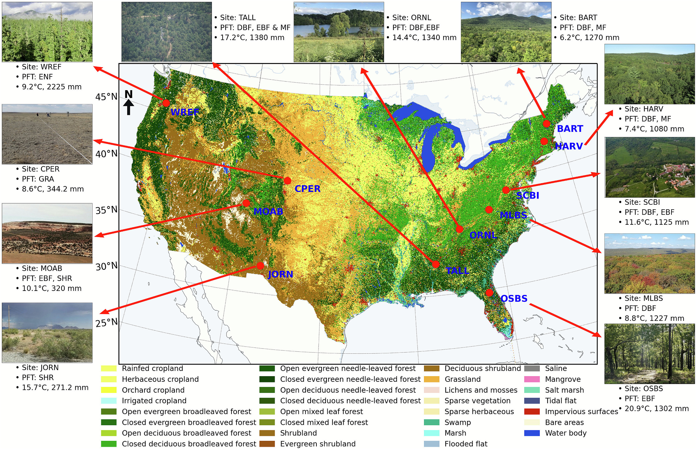
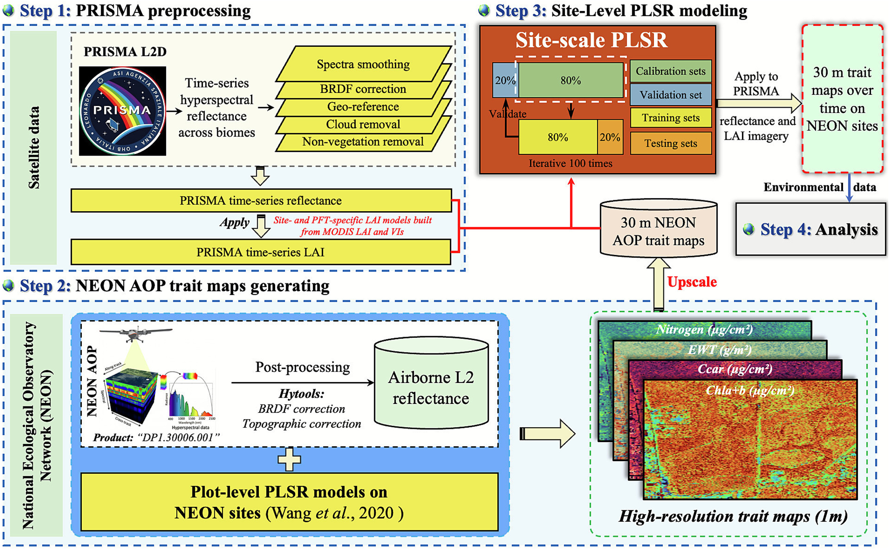
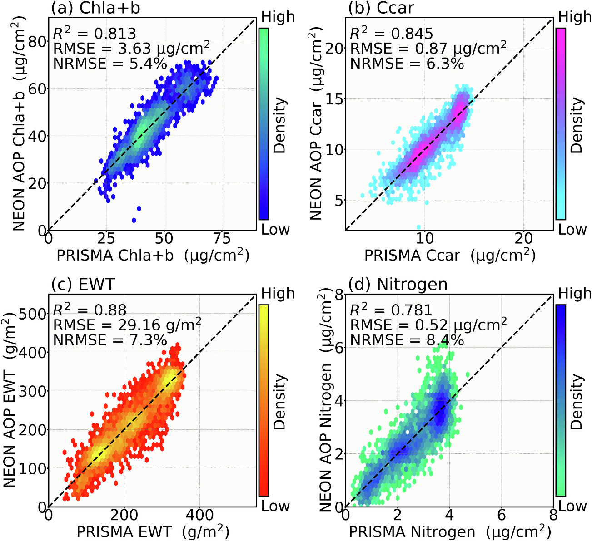
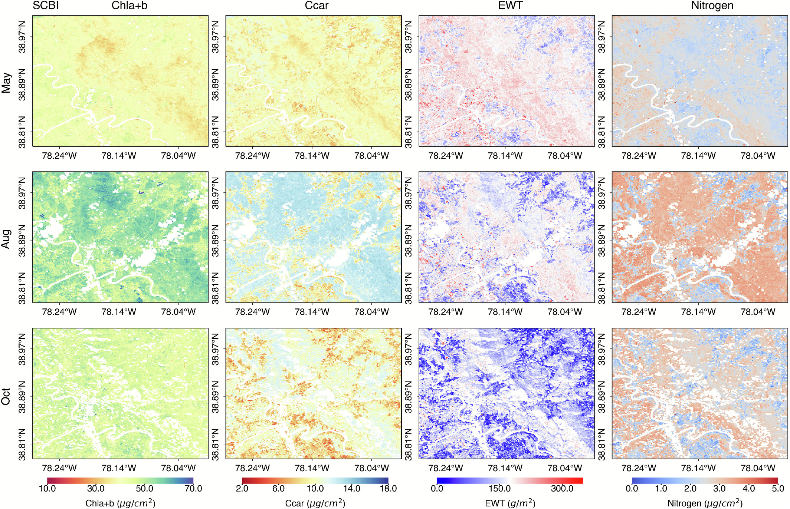
These findings highlight the capability of PRISMA for large-scale, time-series plant functional trait mapping and provide valuable insights into the interactions between plant traits and environmental factors, contributing to our understanding of plant functional ecology and improving predictions of ecosystem responses to environmental changes.
Leveraging transfer learning and leaf spectroscopy for leaf trait prediction with broad spatial, species, and temporal applicability
Accurate and reliable prediction of leaf traits is crucial for understanding plant adaptations to environmental variation, monitoring terrestrial ecosystems, and enhancing comprehension of functional diversity and ecosystem functioning.
Various approaches (e.g., statistical, physical models) have been developed to estimate leaf traits through hyperspectral remote sensing and leaf spectroscopy. However, the absence of high-performing, transferable, and stable models across various domains of space, plant functional types (PFTs) and seasons hinder our ability to quantify and comprehend spatiotemporal variations in leaf traits.
This study proposes robust and highly transferable models for better predicting leaf traits with hyperspectral reflectance. Three datasets were assembled, pairing common leaf traits — chlorophyll (Chla+b, µg/cm2), carotenoids (Ccar, µg/cm2), leaf mass per area (LMA, g/m2), equivalent water thickness (EWT, g/m2) — with leaf spectra measurements collected across diverse geographic locations in the U.S. and Europe, PFTs, and seasons.
- Research Questions:
- Do our proposed transfer learning models have better performance than PLSR, GPR, and pure RTMs?
- Are the transfer learning models more transferable across different geographic locations, PFTs, and seasons?
- How do inconsistency and quantity of real observations used for fine-tuning influence model performance?
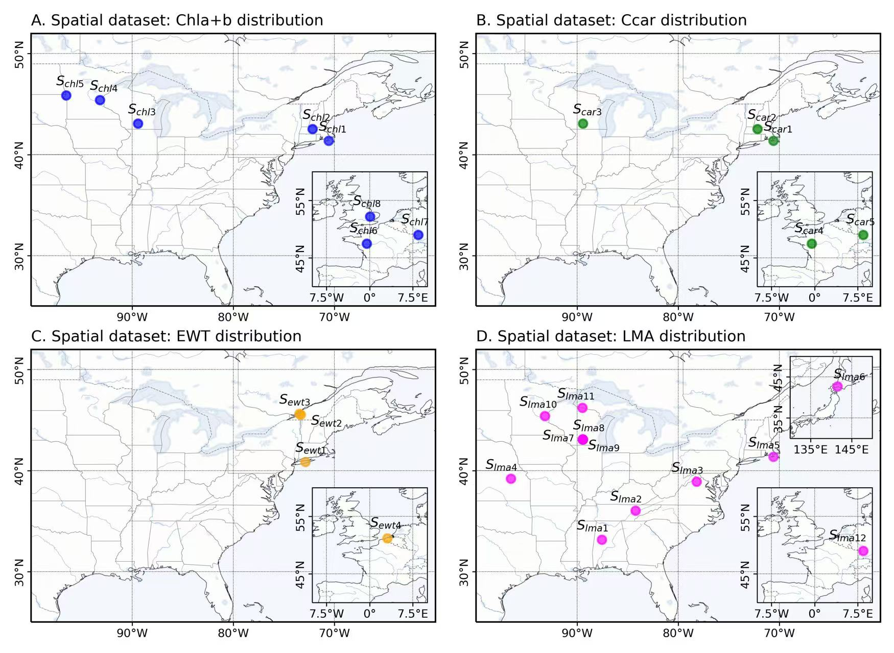
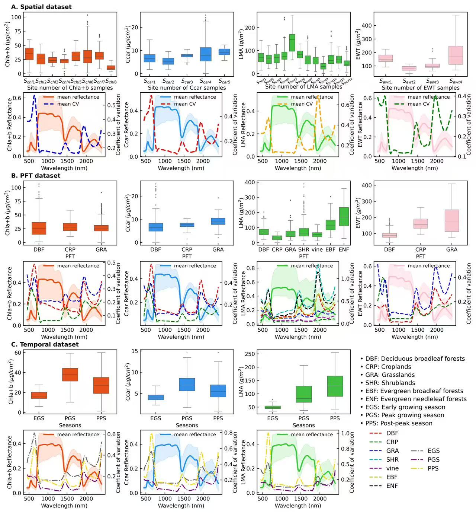
- Framework — four steps:
- Pure radiative transfer modeling.
- Transfer learning modeling.
- Statistical modeling.
- Model performance assessment.
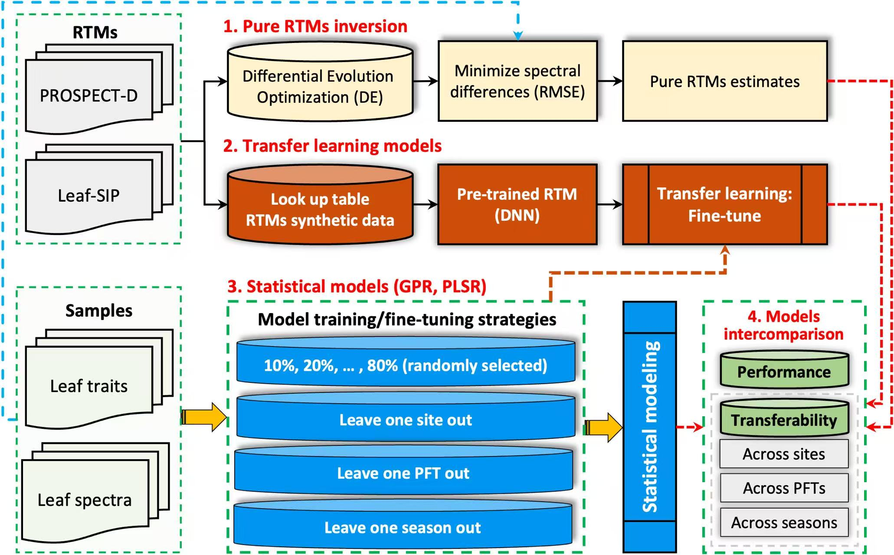
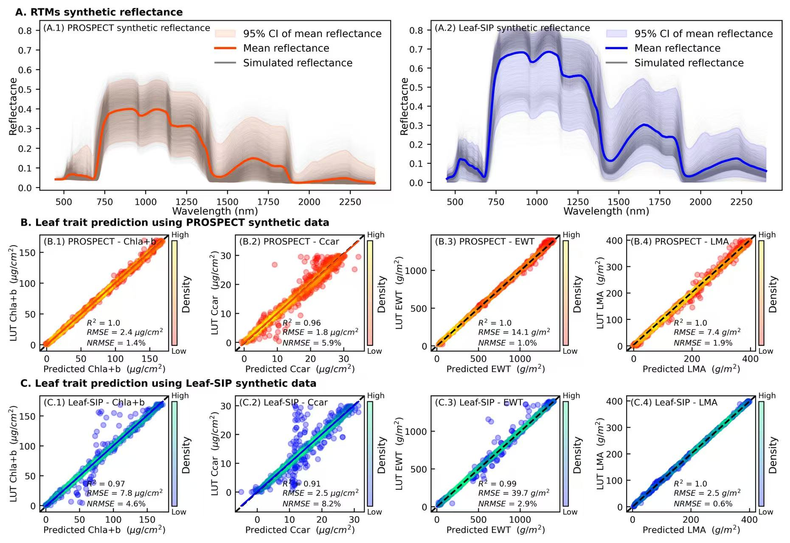
Through comparison with PLSR, GPR, and pure physical models, the proposed transfer learning models achieved better predictive performance and higher transferability.
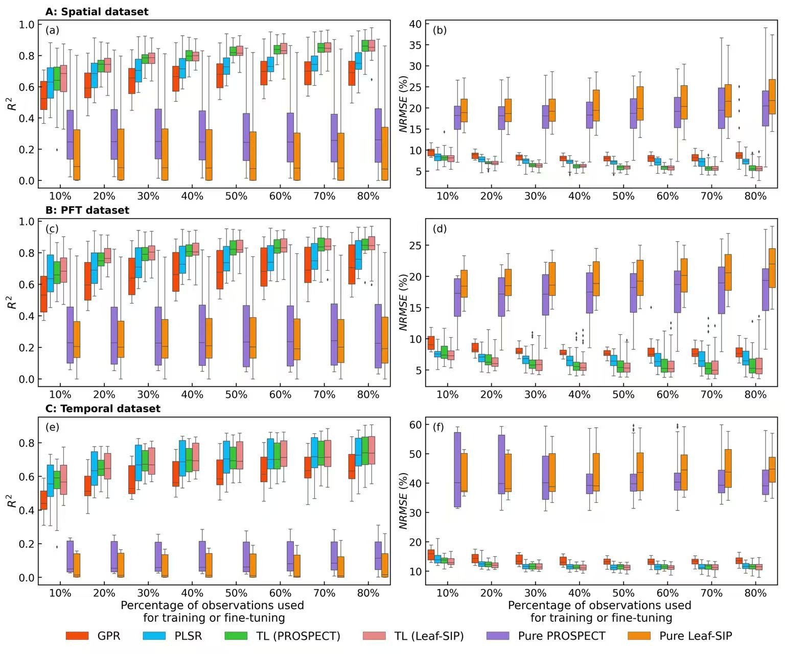
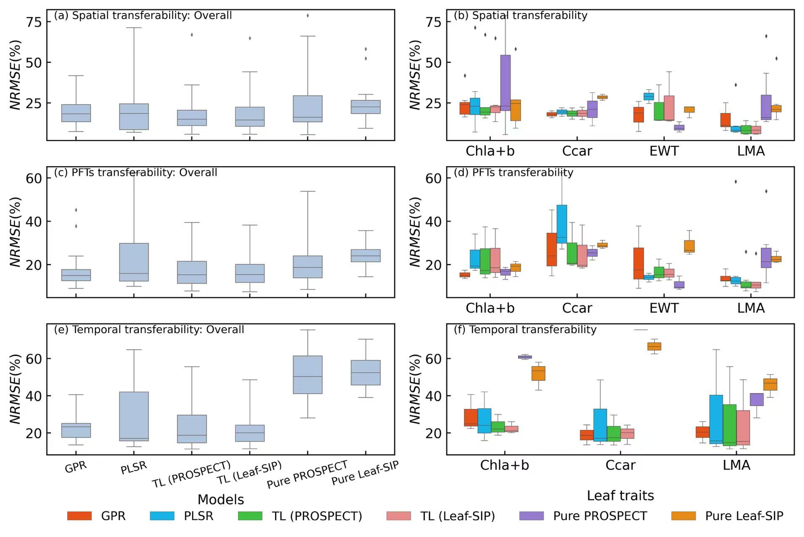
Unveiling the transferability of PLSR models for leaf trait estimation: lessons from a comprehensive analysis with a novel global dataset
Leaf traits are essential for understanding many physiological and ecological processes. PLSR models with leaf spectroscopy are widely applied for trait estimation, but their transferability across space, time and plant functional types (PFTs) remains unclear.
- Research Questions:
- How well do PLSR models transfer to new domains (new sites, PFTs and time)?
- What are the potential factors influencing the transferability of PLSR?
- Hypotheses:
- Models can expect accurate predictions within the training data range; performance declines when extrapolating to new domains.
- Greater spectral diversity in training yields better PLSR transferability.
We compiled a novel dataset of paired leaf traits and spectra, with 47,393 records for >700 species and eight PFTs at 101 globally-distributed locations across multiple seasons.
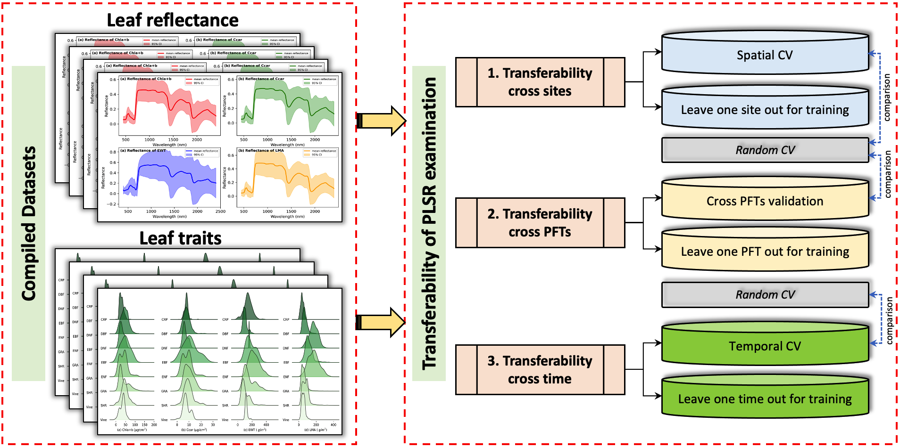
- Leaf spectra: 450–2400 nm, 10 nm interval.
- Total chlorophyll (Chla+b, µg/cm2): 6,840 samples.
- Total carotenoid (Ccar, µg/cm2): 4,233 samples.
- Equivalent water thickness (EWT, g/m2): 3,581 samples.
- Leaf mass per area (LMA, g/m2): 45,417 samples.
- 8 PFTs: ENF, EBF, DNF, DBF, SHR, GRA, CRP, Vine.
While PLSR models demonstrate commendable performance within their training data space, their efficacy diminishes when extrapolating to new contexts. Extrapolating to locations, seasons, and PFTs beyond training data leads to reduced R2 (0.12–0.49) and increased NRMSE (3.58–18.24%) compared to nonspatial random cross-validation (NRCV).
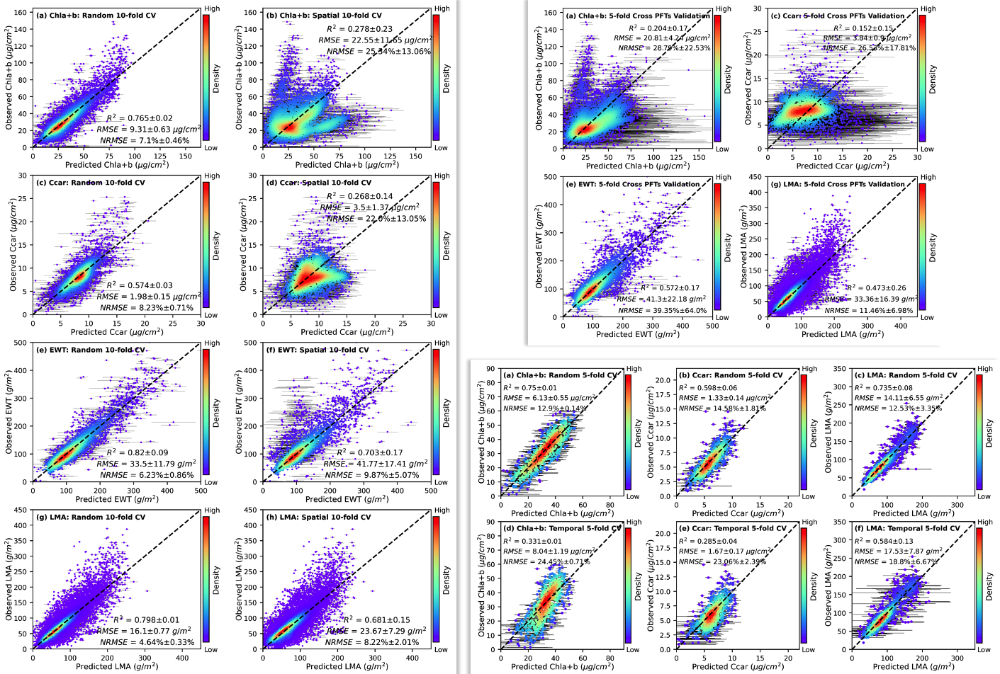
Alpha and beta spectral diversity exhibited positive relationships — greater similarity of spectral diversity yielded greater PLSR transferability.

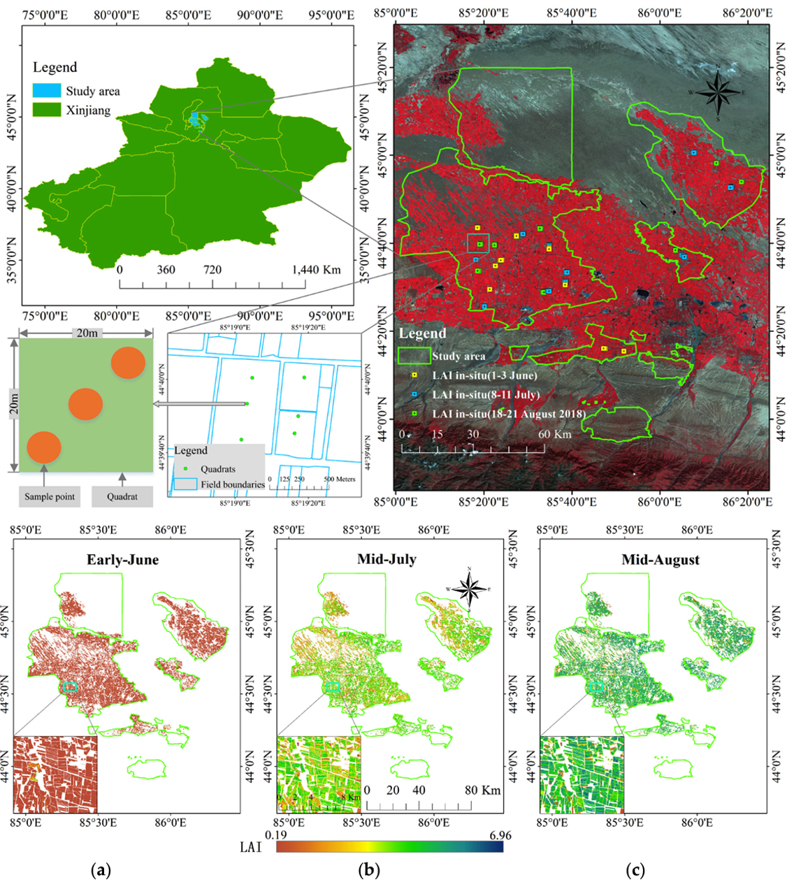
Regional Crop Yield Estimation by Assimilating Time Series of Sentinel-2 Data into a Modified CASA-WOFOST Coupled Model
Rapidly and accurately estimating yields at field scales is very significant. Each type of currently used yield estimation model has been well studied, yet all have certain limitations. Based on a coupled Carnegie-Ames-Stanford approach (CASA)–World Food Studies (WOFOST) model and time series Sentinel-2 imagery, we achieved daily crop simulations and crop yield estimations at two adjacent farms in China.


- Compared with the WOFOST model, the coupled CASA-WOFOST model provided a much faster running speed in yield simulations and similar accuracy.
- Compared with the CASA model, the coupled model provided higher simulation accuracy in mountainous areas and regions of uneven terrain.
Comparison of Machine Learning Regression Algorithms for Cotton Leaf Area Index Retrieval Using Sentinel-2 Spectral Bands
Leaf area index (LAI) is a crucial crop biophysical parameter widely used in various fields. Five machine learning regression algorithms (MLRAs) — ANN, SVR, GPR, Random Forest, and Gradient Boosting Regression Tree (GBRT) — were used to retrieve cotton LAI with Sentinel-2 spectral bands. The performances of the five models are compared for better applications of MLRAs in remote sensing.
We conducted the comparison of five MLRAs in an agricultural area of Northwest China over three cotton seasons with corresponding field campaigns for modeling and validation. Results show that the GBRT model outperforms the other models with respect to model accuracy on average.
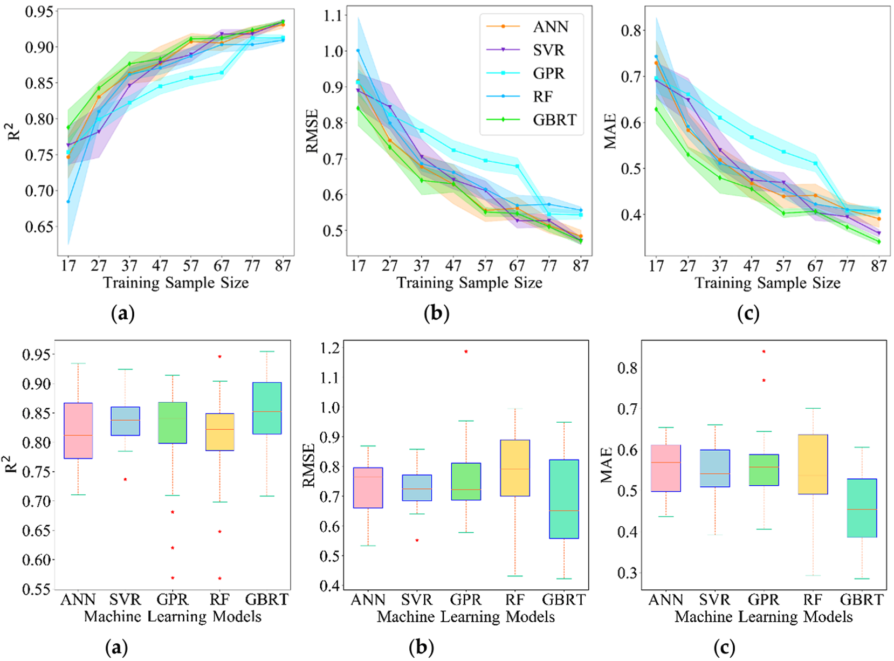